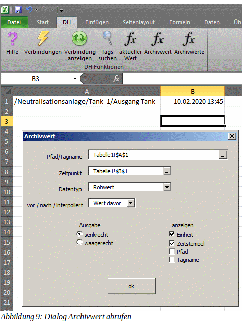

DH Ribbon
Verbindung zum Server herstellen
Tags suchen
aktuelle Werte abrufen
Archivwert abrufen
Archivwerte abrufen
Bevor Sie Werte abrufen können, müssen Sie sich am DH Server anmelden. Über das Symbol
wird der Dialog Verbindungen geöffnet:
Auf der linken Seite befindet sich die Liste der bereits konfigurierten Verbindungen. Wählen Sie dort den gewünschten Server aus und klicken Sie auf verbinden. Ob die Verbindung zum Server hergestellt werden konnte, wird Ihnen nach ca. ein bis zwei Sekunden angezeigt.
In der Praxis hat es sich bewährt, die Tags, mit denen man arbeiten möchte, jeweils in eine Zelle zu schreiben. Manchmal kann es mühsam sein, die ganzen Pfade und Namen der Tags manuell einzutragen, Über den Dialog
ist das schon deutlich bequemer.
Im obersten Feld wird der zu suchende Text eingetragen. Hierbei dient das % Zeichen als Platzhalter für beliebig viele Zeichen. Über den Schalter suchen wird eine Suche in den Pfaden, Tagnamen und den Beschreibungen angestoßen. Im Beispiel oben wurde nach den tags gesucht, welche den Textteil Ausg im Namen, im Pfad, oder in der Beschreibung haben. Es können mehrere Zeilen im Ergebnisfeld markiert werden. Am unteren Rand kann ausgewählt werden, ob die markierten Zeilen im Tabellenblatt unter- oder nebeneinander ausgegeben werden. Der Schalter Auswahl übernehmen überträgt schließlich die ausgewählten Tags ins Tabellenblatt.
Der neueste Wert eines Tags wird über die Funktion aktWert abgerufen. Die Funktion verhält sich wie jede andere Funktion in Excel auch. Sie erwartet als Parameter den kompletten Tagnamen und jeweils eine 1 oder 0 für die Ausgabe der Einheit, des Zeitstempels, des Pfades und des kurzen Tagnamens. Zudem erwartet sie eine 0 für die waagerechte, oder eine 1 für eine senkrechte Ausgabe des Ergebnisses. Das kann man entweder direkt als Formel in eine Zelle schreiben, oder man nutzt den bequemen Weg über den Dialog.
Wenn Sie die Bearbeitungszeile in der Abbildung oben etwas genauer betrachten, dann fallen Ihnen sicherlich die geschweiften Klammern auf. Diese zeigen an, daß es sich hierbei um eine Bereichsformel handelt. Das bedeutet, daß eine einzelne Zelle aus dem Bereich, über den sich die Formel erstreckt, nicht geändert werden kann. Möchte man die Funktion manuell bearbeiten, dann muß die Zelle über die Tastenkombination STRG rechts + Umschalttaste + ENTER verlassen werden. Ansonsten erhalten Sie eine Fehlermeldung. Um alle Bereichsformeln neu berechnen zu lassen, drückt man STRG rechts + Umschalttaste + F9.
Der bequeme Weg über diese Schaltfläche im Ribbon DH:
Im Gegensatz zur Funktion aktWert, wird mit dieser Funktion nicht grundsätzlich der neueste Wert abgerufen. Die Funktion dient dazu, den Wert eines Tags zum angegebenen Zeitpunkt auszugeben. Es handelt sich hierbei ebenfalls um eine Funktion, welche sich so verhält, wie jede andere Funktion in Excel auch. Das Ergebnis wird, wie zuvor schon beschrieben, in Form einer Bereichsformel ausgegeben.

Im Archiv befinden sich nicht so viele Werte für einen Tag, daß man für jeden beliebigen Zeitpunkt einen tatsächlich archivierten Wert ausgeben kann. Daher haben Sie die Wahl, ob Sie den letzten archivierten Wert vor dem angegebenen Zeitpunkt, den nächsten Wert nach dem angegebenen Zeitpunkt, oder einen interpolierten Wert sehen möchten.
Hier die Ergebnisse für das oben gezeigte Beispiel:
Neben den erfassten Werten, liefert das Archiv auch statistische Werte, falls der Tag entsprechend konfiguriert ist. Ob Sie nun einen erfassten Wert, einen Stunden- oder Tagesmittelwert, einen Mindestwert, u.s.w. sehen möchten, wählen Sie über das Feld Datentyp aus. Die Option Rohwert zeigt den erfassten Wert.
Hierbei handelt es sich nicht um eine Excel – Funktion. Über den unten dargestellten Dialog läßt sich eine Reihe von Archivwerten über einen vorgegebenen Zeitraum abrufen. Excel Arbeitsmappen können extrem langsam werden, wenn der Abruf ganzer Wertereihen als Excel – Funktion implementiert ist. Daher haben wir hier absichtlich auf eine Excel-Funktion verzichtet. Allerdings ist es so, daß der unten gezeigte Dialog beim Öffnen danach schaut, ob an gleicher Stelle bereits eine Wertereihe abgerufen wurde. Wenn dem so ist, werden die Felder des Dialoges mit den vorhandenen Angaben vorbelegt.
Die Felder Tagname, von, bis, Typ und Ausgabe wurden weiter oben bereits genutzt, b.z.w., sollten keiner Beschreibung bedürften. Wirklich neu in diesem Dialog sind die Optionen Unix Zeitstempel, vt und vt interpoliert.
Das Kürzel vt steht für Value x Time.
Es handelt sich dabei um den vorherigen Wert, multipliziert mit der
Zeitdifferenz in Sekunden des Wertes zum vorhergehenden Wert. Beim vt
interpoliert handelt es sich um den Mittelwert vom vorhergehenden und
aktuellem Wert, multipliziert mit der Zeitdifferenz in Sekunden. Das
Produkt aus Wert und Zeitdifferenz (vt) erleichtert die Berechnung
von von Summen und Mittelwerten. Eine ausführliche Beschreibung mit
Beispielen zur Verwendung des vt und des vt interpoliert finden Sie
im Benutzerhandbuch.
Beim Unix Zeitstempel handelt es sich um
die Anzahl an Sekunden, die seit dem 01.01.1970 00:00:00 (UTC)
vergangen sind. Damit läßt sich einfacher rechnen, als mit der
sonst üblichen Angabe eines Zeitpunktes.